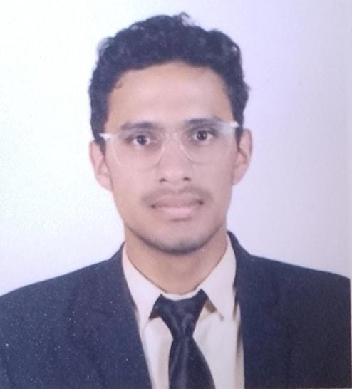

Jorge Alvarez
Estudiante de Bachillerato en computacion
✉️ jiap483@gmail.com | 📞 +502 5513-8218| 🎈 San Lucas Sacatepequez
Facebook
linkendin
instagram
github
Perfil profesional
Estudiante apacionado por la tecnologia y la programacion.Responsable, proactivo y con facilidad para aprender trabajar con equipo
Educacion
-
Bachillerato en computacion
Liceo Cristiano de Estudios Avanzados ELIM, san lucas sacatepequez
2026-presente
-
Basicos
Liceo Cristiano de Estudios Avanzados ELIM, san lucas sacatepequez
2022-2024
-
Primaria
Colegio el caliope, san miguel petapa
2016-2017
Habilidades
-
Mecanico automotriz: motor, frenos y carrozeria
-
Idiomas: Español (Nativo) e Ingles (Intermedio)
-
Redaccion formal: Word
-
Presentacion de Informe: Canva y Power Point
Proyectos
-
Proyecto de vida
Plan personal enfocado en metas académicas, profesionales y crecimiento personal a futuro.
-
Proyecto de Nacion
Propuesta de desarrollo del país basada en educación, economía, salud e infraestructura para mejorar la calidad de vida de la población.
Logros y Reconocimientos
-
Cuadro de honor "5 años consecutivos" del Colegio Cristiano de Estudios Avanzados ELIM
-
Seleccionado de Basquetbool a nivel departamental
-
Karateca cinta negra con medallas de combate y kata
-
Ciclista y atleta con reconocimineto a nivel departamnetal
Valores y Actitudes
-
Colaboración
Me gusta trabajar junto a otras personas, colaborar, compartir ideas y apoyar a mi equipo para que juntos podamos cumplir los objetivos y realizar un buen trabajo.
-
Responsabilidad con el tiempo
Procuro ser puntual, cumplir con los horarios y entregar mis trabajos en las fechas establecidas, demostrando responsabilidad en mis actividades.
-
Organización
Me gusta mantener mis actividades, tareas y materiales en orden, planificando mi tiempo para realizar mis trabajos de manera correcta y eficiente.
2016-2017
-
Proactividad
Me considero una persona que toma la iniciativa, me gusta proponer ideas, participar y buscar soluciones cuando se presenta algún problema o actividad
2016-2017
Experiencia Laboral
-
Trabajo agricultura
Cultivo de "maiz, frijol y cafe" y recolecion de leña 2019-2022
-
Mecanico Automotriz
Taller de mecanica "Lopez" experiencia en "frenos, carrozeria y motores" 2022-2025
Referencias Personales
-
Emilio Estrada
Doctor en Leyes- Bufete Abogados la Paz
📱+502 4218-3245
-
Melissa Rodriguuez
Contadora- Bufete Abogados la Paz
📱+502 4172-6354
-
Romario Rodriguez
Ingeniero en Informatica- Bufete Abogados la Paz
📱+502 75896-5239